FAVELEIRAS
Ocupar e fazer cidade
Faveleiras olha para a cidade que se produz no cotidiano: nas casas que se ampliam, nas roupas que são modificadas, nos encontros, nos bailes e nas formas de ocupar a rua. A coleção parte da periferia como escolha conceitual — não como carência ou cenário, mas como território de criação, autoria e resistência.
O nome “Faveleiras” remete à favela como forma de moradia e à força de quem constrói vida nela, mas a coleção amplia esse olhar para a periferia como um todo: um conjunto de relações desiguais com o centro, onde se produz identidade, estética e narrativa.
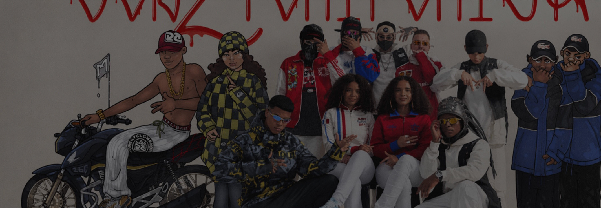
Aqui, a cidade é algo em constante construção por quem vive nela.
Foto por Rodrigo Ladeira/Divulgação - Imagem de acervo do Vivência Lab
HISTÓRIA
Nós criamos nossos espaços
O caso de Carolina Maria de Jesus ancora esse recorte. Em Quarto de Despejo (1960), ela parte de uma metáfora central: “a favela é o quarto de despejo de uma cidade. Nós, os pobres, somos os trastes velhos.” Essa imagem tem consequência direta para a coleção: o material descartado pela cidade é a matéria-prima do subúrbio — não por falta de opção, mas porque
recombinar é a prática cultural do território.
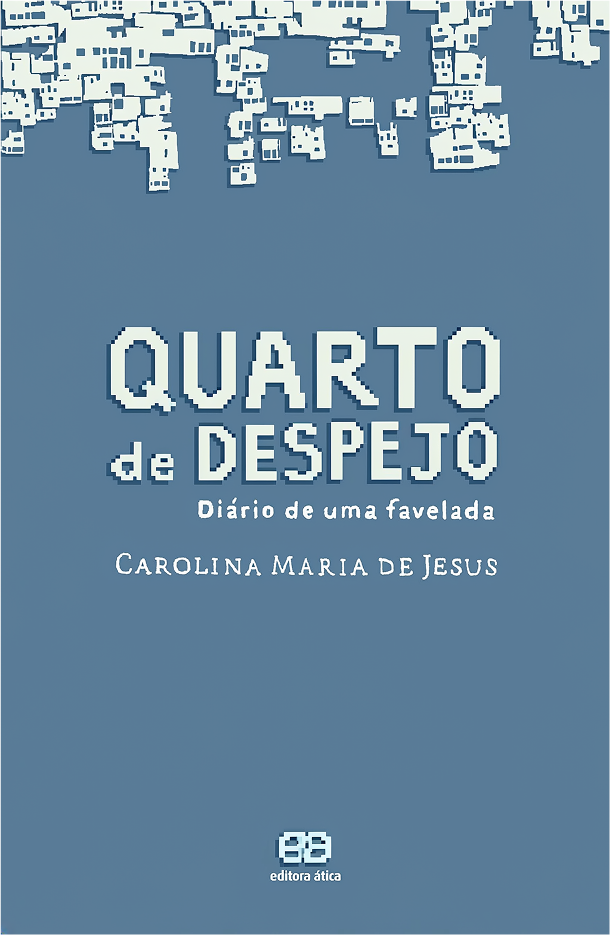
A Favela do Canindé, formada em 1948 às margens do Rio Tietê e extinta em 1961, oferece o momento narrativo mais forte: um território que desapareceu fisicamente, mas cujas memórias, hábitos e formas de existir permaneceram e foram ressignificados. Carolina viveu essa tensão na própria pele — entre o desejo de “andar bem limpinha” e a consciência de que o território pode ser removido a qualquer momento.
Se o território pode ser apagado, o que não pode? A resposta de Carolina é: a escrita, a memória, os hábitos corporais. Para a coleção, o que está no corpo — a roupa — é a última possessão que não pode ser desapropriada.
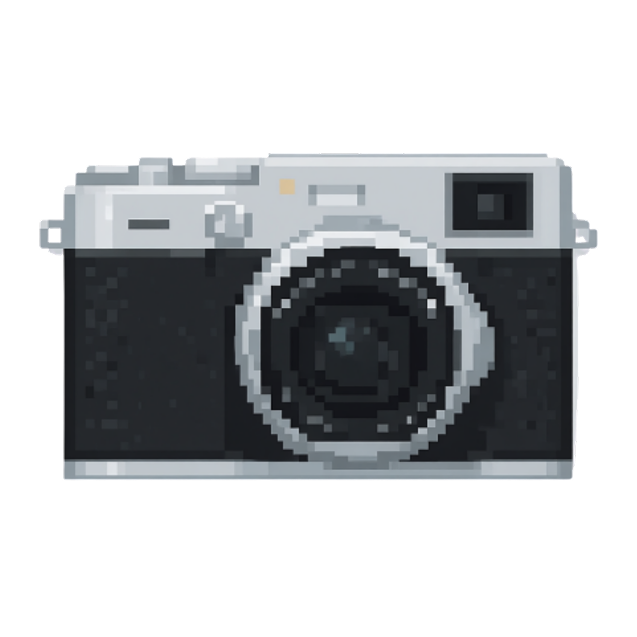
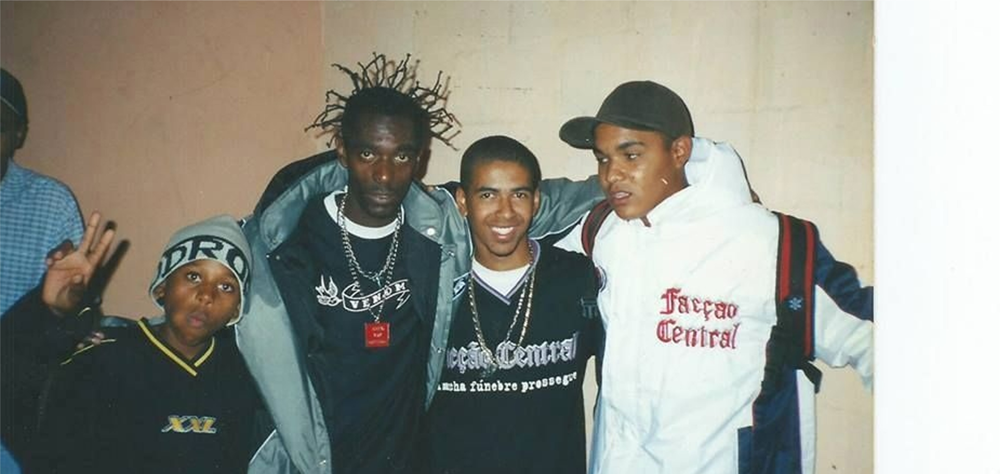
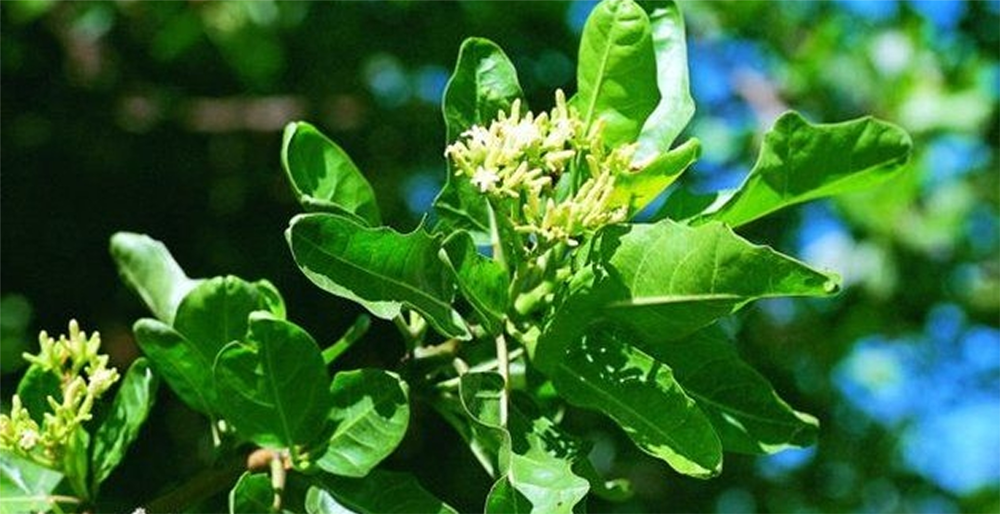
ELEMENTOS
Festividades, eventos, sociabilidade
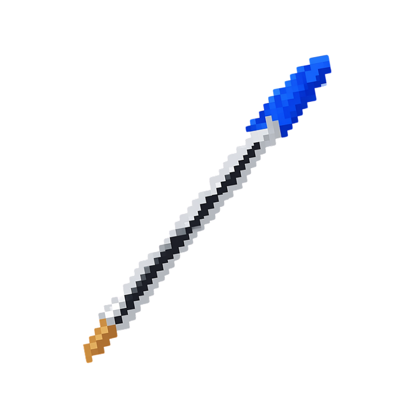
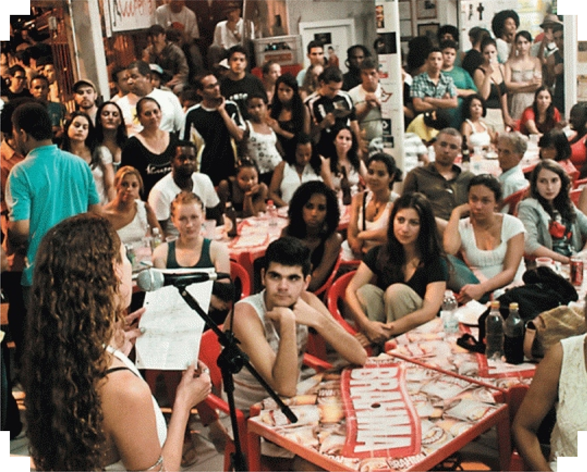
SOCIABILIDADE
Saraus, baile funk, igrejas, lan houses e partidas de futebol de várzea são exemplos de espaços de sociabilidade que estruturam a vida do bairro.
Sarau Cooperifa no Bar do Zé Batidão, 2019.
Foto por Maurício Hashizume
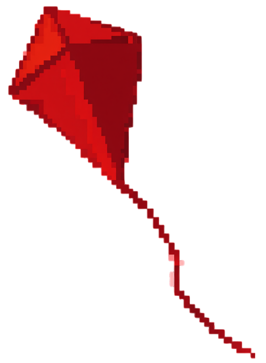
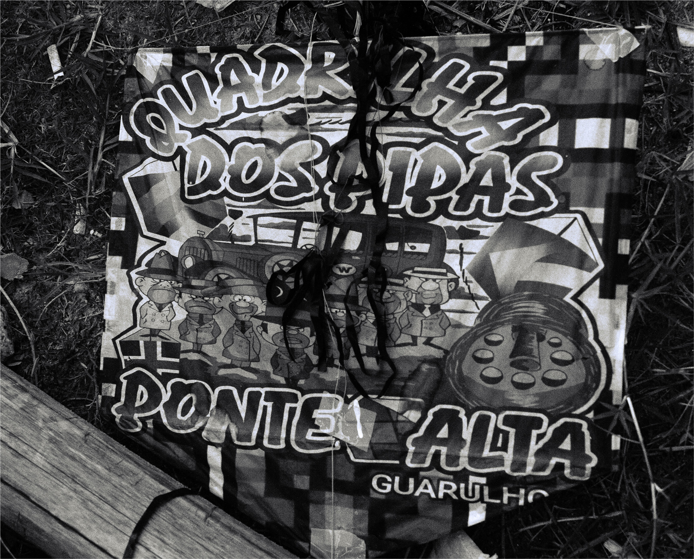
PIPAS
Para além de brinquedos, as pipas representam a conexão comunitária e são formas acessíveis, históricas e potentes de lazer.
Quadrilha dos pipas, 2026. Foto por Aysha Morena
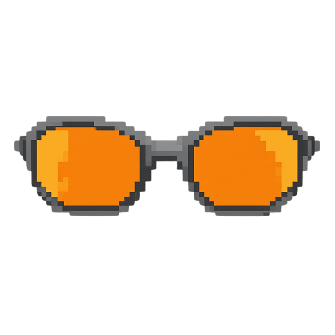
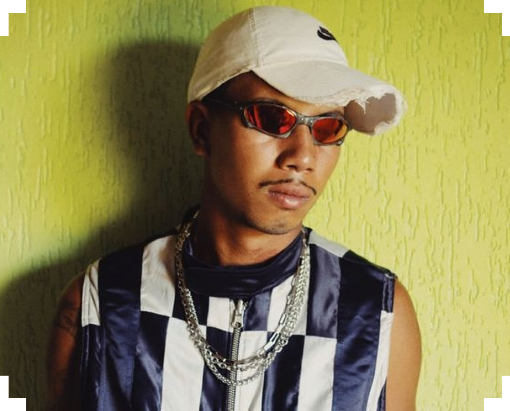
MANDRAKE
Os óculos Juliet, as planetárias, grifes ressignificadas, adornos são formas de vestir que comunicam pertencimento e reconhecimento.
Rélo, 2021. Foto por Caodenado
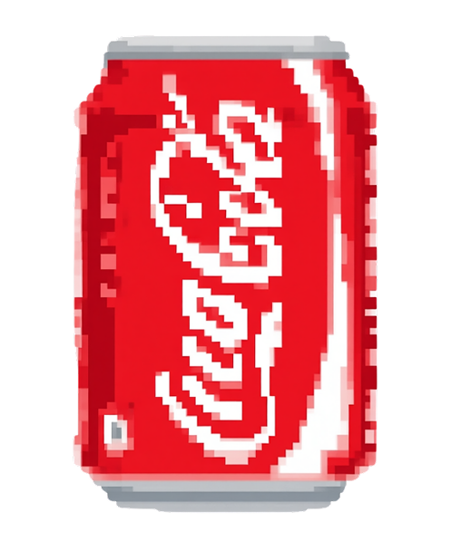
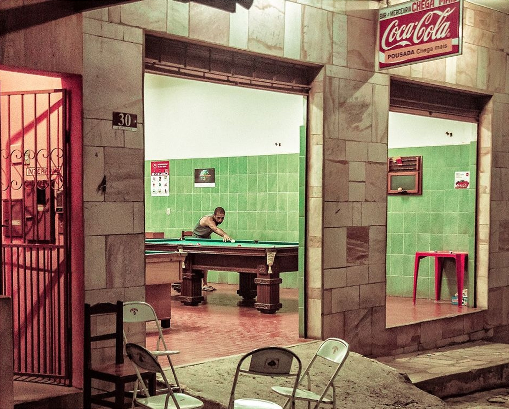
BARES E
MERCADINHOS
Além de pontos de comércio, os bares e mercadinhos são exemplos de pontos de encontro e refletem a realidade imediata do bairro.
Boteco. Data e autoria não encontradas